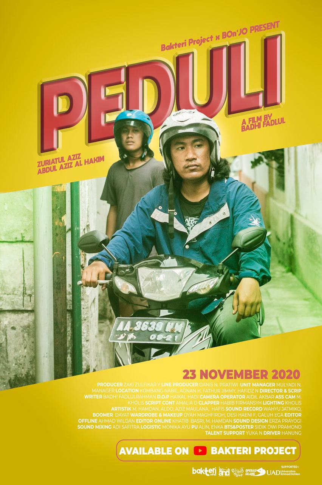
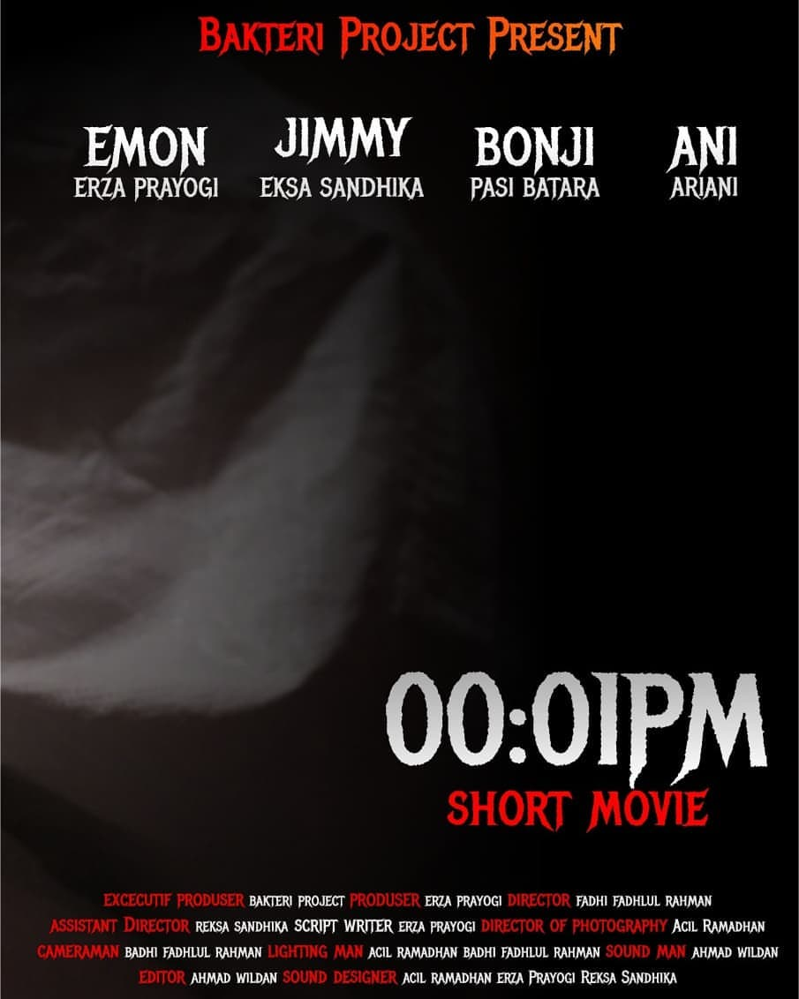
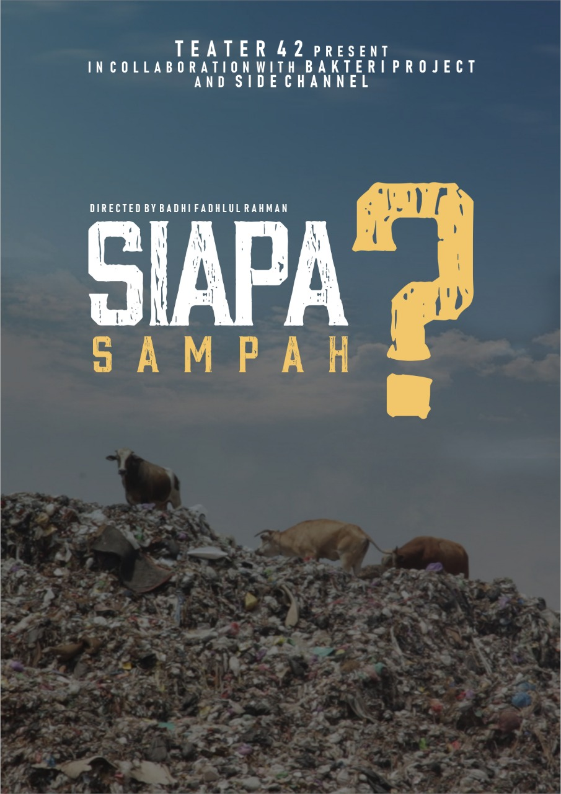

02 / Profile
Work shaped
on set.

Badhi Fadlul Rahman is a filmmaker whose credits span directing, assistant direction, camera, lighting, sound, and production support. This portfolio gathers selected projects and crew roles in one place.
Read the full credit list03 / Direction
Selected work
Four projects credited to Badhi as director.



04 / Production credits
Beyond the
director's chair.
Credits are grouped by project type so collaborators can quickly review Badhi's production experience.
Narrative & independent work
All narrative credits- A Broken MindAssistant Director
- Merawat IngatanAssistant Director
- RinggaAssistant Director
- The Sweet SorrowLighting
Commercial & institutional work
All commercial credits- CRCS UGM Faculty ProfileCamera Operator
- Positive Film Against COVID-19Clapper Loader
- Nini Thowong Cultural DocumentaryAssistant Camera
- Pandanrejo Cultural Village ProfileDirector